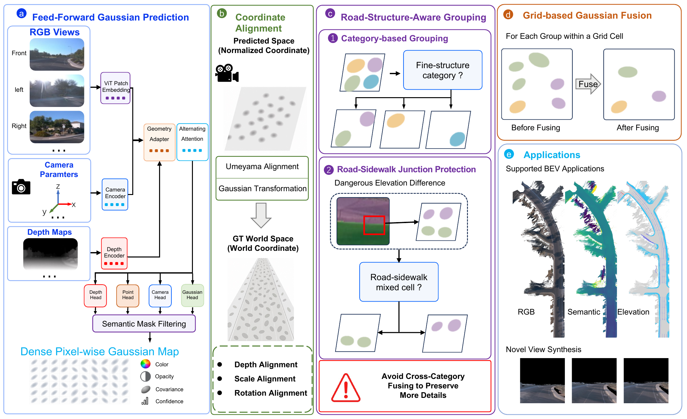
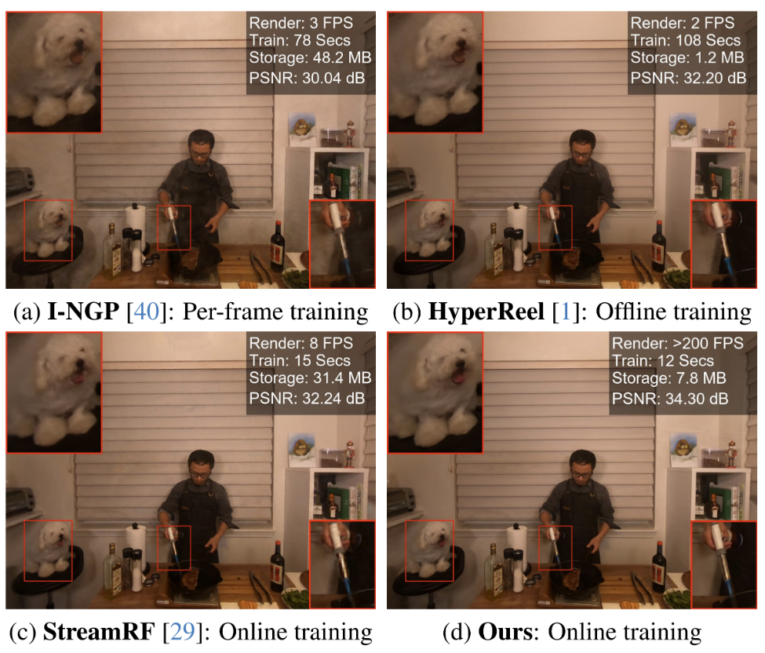
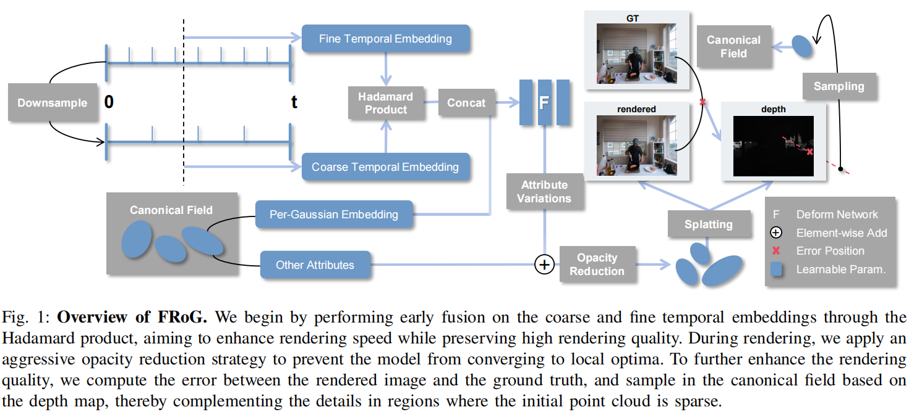

Han Jiao (焦涵)
I am a second-year Master's student at the School of Computer Science and Technology, Zhejiang University, advised by Prof. Lei Zhao. I received my B.S. degree from the Chu Kochen Honors College, Zhejiang University.
News
- [2026.07] Joined ByteDance as an AIGC Algorithm Intern.
- [2026.03] First-author paper Frog is accepted by TVCG.
- [2026.02] First-author paper MAPo is accepted to CVPR 2026.
- [2025.11] Joined Li Auto as a World Model Algorithm Intern.
- [2025.06] Joined Alibaba as an AIGC Algorithm Intern.
- [2024.07] Joined Tencent LightSpeed Poly Lab as a Graphics Algorithm Intern.
- [2024.02] Our work 3DGStream is accepted as a CVPR 2024 Highlight.

RoadVGGT: Road-Structure-Aware Feed-Forward Road Surface Reconstruction First Author
arXiv preprint, 2026
[PDF] | [Project Page] | [Code]
Introduces a road-structure-aware feed-forward framework that reconstructs compact Gaussian road surfaces without per-scene test-time optimization. Confidence-weighted road-plane fusion keeps the representation compact while category-aware processing preserves road markings and junction structures.

MAPo: Motion-Aware Partitioning of Deformable 3D Gaussian Splatting for High-Fidelity Dynamic Scene Reconstruction First Author
IEEE/CVF Conference on Computer Vision and Pattern Recognition (CVPR), 2026
[PDF] | [Project Page] | [Code]
Proposes a motion-aware partitioning framework based on dynamic scores to recursively divide and specialize high-dynamic 3D Gaussians over time, achieving SOTA rendering quality on N3DV with high computational efficiency.

3DGStream: On-the-Fly Training of 3D Gaussians for Efficient Streaming of Photo-Realistic Free-Viewpoint Videos
IEEE/CVF Conference on Computer Vision and Pattern Recognition (CVPR), 2024
[PDF] | [Project Page] | [Code]
Achieves real-time renderable, high-fidelity free-viewpoint video streaming on real-world multi-view video streams through compact neural transformation caching and adaptive Gaussian addition strategies.

Fast and Robust Deformable 3D Gaussian Splatting First Author
IEEE Transactions on Visualization and Computer Graphics (TVCG), 2026
[PDF] | [Project Page] | [Code]
Significantly accelerates rendering and training time while maintaining competitive quality by merging time embeddings via Hadamard-product, applying canonical field sampling for areas lacking initial point clouds, and using an aggressive opacity reduction strategy to maintain training stability.
Work Experience

ByteDance
AIGC Algorithm Intern | TikTok Shop
- Contribute to production-oriented post-training of image generation and editing models for e-commerce creative applications.
- Develop reward modeling and scalable evaluation methods to align generated content with user intent, aesthetic quality, and commercial usability.
Li Auto
World Model Algorithm Intern | Joint Reconstruction Group
- Worked on world-model-related 3D reconstruction and physically grounded simulation.
- Explored efficient feed-forward reconstruction methods.
Alibaba
AIGC Algorithm Intern | Supply Intelligence Group
- Worked on image generation and editing algorithms, with a focus on improving visual quality and robustness.
- Participated in the development of training data pipelines and model adaptation for AIGC applications.
Tencent
Graphics Algorithm Intern | LightSpeed Poly Lab
- Worked on 3D data processing and geometry-related algorithm optimization for large-scale digital assets.
- Supported efficiency improvements in content production pipelines for 3D graphics applications.